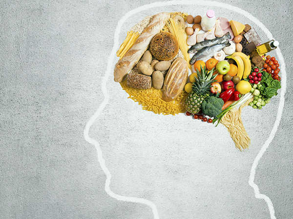

DuckDiet
DuckDietPurpose

College students are often burdened by the overwhelming amount of choices for food when they first start college.
This dilemma often leads to unhealthy choices for meals, causing common problems such as weight gain, lack of exercise, laziness, and more.
Duck Diet serves to create an efficient and simple way for Stevens students to track their meals through an online meal planner,
to promote better self-care, wellness, and organization. The goal is to help students build better habits towards improving their
wellness and nutritional health by automatically setting goals for students.
At Stevens, students are doing their absolute best to succeed as they master each of their subjects and engage in activities both on and off campus.
We hope to help these students on their path to success by removing some of the stress and worry that goes into planning their meals
and diet so that they can focus on what's important to them. This website and project aims to serve the greater Stevens community and
to further every individual's educational and nutritional goals.